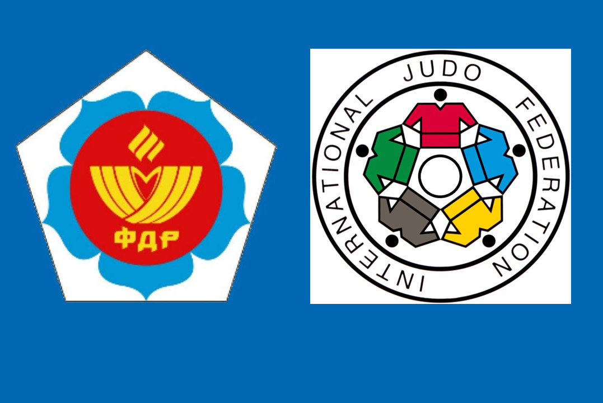

Задняя подножка

Картинка с выполнением приёма
Описание
- Бросок выполняется с захвата противника за одежду у локтя и на
плече со стороны его впереди стоящей ноги
-
С шагом вперёд и в сторону движения руки и туловища вниз осадить противника на эту ногу
-
Поставить ногу за опорную ногу противника, подбивая её, и рывком руками бросить противника через ногу
Условия для броска
- Взять свой захват
- Навязать свой ритм схватки
- Воспользоваться возможностью для броска
Арсен Галстян — ученик адыгейской школы дзюдо, представитель знаменитого майкопского дзюдо, основатель которого — Якуб Коблев, был признан лучшим тренером России XX века по дзюдо.
Родился Галстян в 1989 году в селе Неркин-Кармирахпюр на северо-востоке Армении. Отец был футболистом, играл за дилижанский клуб «Импульс», во второй половине 1970-х годов выступал в составе ереванского «Арарата».
В возрасте 7 лет в 1996 году Арсен переехал с семьёй в Россию — в станицу Гиагинскую Республики Адыгея. Учился в СОШ № 4 станицы, начал заниматься дзюдо в местной спортивной секции.
Игорь Романов — первый наставник Арсена и сейчас остаётся его личным тренером. После окончания школы он поступил в Институт физической культуры и дзюдо Адыгейского государственного университета в городе Майкопе.
В институте его тренером был МСМК Хашханок Айвар Казбекович (серебряный призёр Чемпионата Мира среди мастеров).
В 2012 году на Летних Олимпийских играх в Лондоне Арсен Галстян завоевал золотую медаль, став первым олимпийским чемпионом в истории российского дзюдо после 1991 года, а также первым армянином — обладателем олимпийского золота по борьбе дзюдо и одним из трёх дзюдоистов армянского происхождения, удостоенных олимпийской награды (до него призёрами олимпиады становились Бернар Чулуян в 1980 году от Франции и Армен Багдасаров в 1996 году от Узбекистана).
Также он стал первым российским мастером, победившим в финале японца. Член Сборной России по дзюдо с 2007 года. На Летней Универсиаде в Казани в 2013 году дошёл до финала и выиграл серебряную медаль. В 2016 году боролся на Чемпионате Европы в Казани в весовой категории до 66 кг, и завоевал бронзовую медаль.
Приминение подножек
